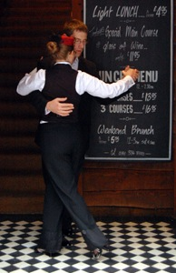
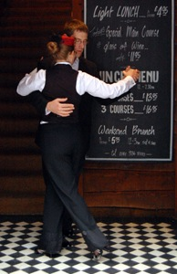

A passion for Tango - Authentic Argentinean Tango in Glasgow
Tango as danced in the Salons of Buenos Aires in the Golden Age. Classes, workshops and performances.
 

Beginners Classes January 2014
Take the Fast Track Challenge! Only two places left
Fast-Track Beginners Tango Classes in Glasgow start Friday 17 January 2014. Everyone books with a dance partner — no compulsory partner rotation. You can book online.
Read more about our tango classes in Glasgow.
Volunteer position Tango Tipica is not-for-profit and supports a local children's charity. We are looking for a volunteer to help us with promotion and marketing of tango performances and workshops. Please contact us if you are interested.
Tango Tipica supports local children's charity With Kids by donating the proceeds of all tango activities.